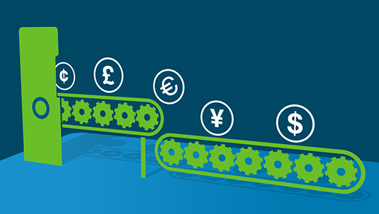

- You are here:
- Home >
- Careers >
- Graduates >
- International Graduate Programme >
- Transactional Banking
Transaction Banking
-

-
Our programme is designed to set you up for success in your first full-time role. What you do and where you go across the breadth of our business is up to you.
What is Transaction Banking?
Transaction Banking impacts the real economy. It facilitates the flow of trade and investment. We help our clients manage their working capital and obtain critical financing to keep the flow of goods and services moving, helping investors to access markets in Asia, Africa and the Middle East.
Our Transaction Banking business is made up of:
- Cash Management
To help clients manage their cash flows offering account, collection, clearing and payment services. - Mobile Money
Innovate with creative solutions, including mobile money and other digital channels. -
Trade Finance
As the world’s leading Trade Bank, we help our clients navigate international trade by offering import, export, inventory, receivables and supply chain financing. -
Securities Services
To provide securities industry participants with tailored banking solutions including custody services and funds services.
What would a year on our International Graduate Programme look like?
We’ve designed a 12-month programme that will expose you to a variety of work so you can develop all the necessary skills to be successful at Standard Chartered. This is what you can expect during the year:
-
Induction - This is where you'll get to know how Standard Chartered operates in your location. We'll set you up to get started.
-
Month 1: Rotation in Operations - You'll learn how client transactions are processed and how we service our clients.
-
Month 2-3: Induction in Shanghai (5 Weeks) - Get ready for an incredible experience. This is your ultimate induction to the Bank. You’ll make connections from around the world and learn everything you need to be successful in your rotations.
-
Month 4-6: Rotation in Risk - You’ll learn about our approach to risk and how we manage it effectively within Transaction Banking.
-
Month 7-9: Rotation in Sales - Join a customer facing segment sales team, working on live deals partnering with senior sales and product colleagues.
-
Month 10-12: Rotation in Product Management - Get hands-on in a product management team, working across the product life cycle from development to implementation.
-
Deployment : Transition to your first full-time role.
This programme is available in
- Bangladesh
- China
- Ghana
- Hong Kong
- India
- Indonesia
- Malaysia
- Nigeria
- Philippines
- Singapore
- South Africa
- Thailand
- United Arab Emirates
- Vietnam
- Sri Lanka
More about the programme
- What sort of work will you be involved in?show/hide
Banking is an exciting and dynamic industry. In your first year you will be given the broadest possible exposure to our business. These are some of the projects and experiences you can expect:
-
Assist in developing a sales strategy and pitching new products to clients.
-
Get involved in the roll-out of new products to market.
-
Conduct market analysis and make recommendations to our clients and product strategists.
-
- Building your international networkshow/hide
Joining the International Graduate Transaction Banking stream, you’ll become part of an international network.
Your graduate peers will be based across our geographic footprint:
-
Indonesia
-
Malaysia
-
Thailand
-
Singapore
-
China
-
Brunei
-
Taiwan
-
Korea
-
Botswana
-
Gambia
-
Ghana
-
Kenya
-
Tanzania
-
Uganda
-
Zambia
-
Zimbabwe
-
Bangladesh
-
Bahrain
-
Jordan
-
Oman
-
Pakistan
-
UAE
-
- What are the application requirements?show/hide
To apply for this stream you must have the following:
- An undergraduate degree
- The legal right to work in the country that you are applying to
- Business level English (the ability to speak more than one language will be highly regarded).
- Transaction Banking in actionshow/hide
Take a look at the links below to find out more about Transaction Banking and what part it plays in the global economy.
Find out how trade finance works
With over 80 per cent of world trade dependent on trade finance, today’s global markets would look very different without this vital support underpinning the transfer of goods and services. Watch our video by Bharat Padmanabhan, our Global Head of Sales & Client Management and George Nast, our Global Head of Products, for some quick insights about how trade finance works.
The changing world of trade
Global trade growth slowed in the wake of the financial crisis, but will soon grow faster than GDP again. Watch Madhur Jha, our Senior Global Economist, explain why we believe trade will recover, and how global trade patterns have changed dramatically over the past two decades.
China’s dominance as a megatrader
China is the focal point for rapidly growing trade, not only within developed markets, but increasingly between emerging markets as goods and services are not just made in these economies, but consumed there.
- Graduate Alumni - what happened next?show/hide
Here are some of the roles our Graduate Alumni took up at the end of their graduate programme:
-
Product Management Associate - Singapore
-
Sales Associate, Global Corporates - Johannesburg
-
Associate, Client Access - Mumbai
-
RMB Product Manager - Shanghai
-
Trade Advisor - Dubai
-
Assistant Relationship Manager Investors & Intermediaries - Hong Kong
-
- Advice from some Graduate Alumnishow/hide
Alwin Loo - Associate - Malaysia
“A passion for people, applied to banking.”
I used to work in a hotel while I was studying in the US. It taught me a lot about interacting with people from different cultures. I really enjoyed building relationships with people at the hotel, knowing that I was making a difference to their experience.
Finishing University was full of mixed emotions for me. I was excited about what was ahead, but also anxious about the decision that I had to make – what to do with my career. Banking was on my list of possible career paths, but I didn’t know enough about the industry to be certain.
That’s when I decided to speak to a close relative of mine who works in a global bank. He helped me to see that the experience I’d gain working in the banking industry would be a great way to start my career.
Long-term planning has always been something I like to do. That’s why the International Graduate Programme at Standard Chartered stood out for me, I felt like I could see a future with Standard Chartered. The hardest decision was actually choosing the right stream.
In the end I chose the Transaction Banking stream because creating deep relationships with people is something I’m very passionate about. It’s been a great choice for me. Working with this side of the banking business has given me a better outlook on how important this business is to client relationships and how our clients manage their day-to-day cash operations.
Melody Chiu - Sales Analyst, Transaction Banking - London
“I had no banking experience. So instead I did a lot of research into each of my options.”
I studied Economics at University and I've always been interested in working in financial services. When I graduated I was really focused on international opportunities and having as much exposure to clients as possible, because I really enjoy working with people.
A friend of mine had just completed the International Graduate Programme at Standard Chartered when I was making the decision about where to apply. The way she talked about the Bank, with so much passion, is what inspired me to apply. It was an easy decision. I didn’t realise that the hard part was around the corner.
Deciding which stream to join was a real challenge. I had no banking experience to draw on, I didn’t really know what the difference between streams was and what my day-to-day work would look like. So instead I did a lot of research about each of my options.
I chose Transaction Banking because it’s the bread and butter of banking. It gives me the view of how the Bank operates as a whole, and interacts between departments. I’ve had the opportunity to learn about our product offerings as well as the end-to-end process of a deal. Work can be challenging but I find it rewarding when I am given responsibility and get involved, and get to learn something new everyday.
What’s next?
Fast track programme
Make an impact on our biggest and most important business areas.